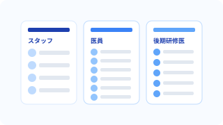
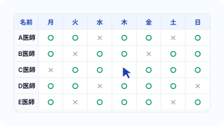
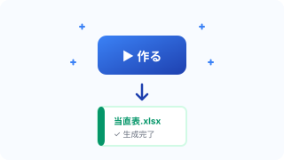

毎月の当直表作成、
こんな負担を抱えていませんか？
当直表メーカーは、大学医局に特化した業務改善ツールです。
初月に担当者や外勤先を一度登録すれば、2ヶ月目以降は勤務可否（○✕）の入力だけ。
毎月2〜3時間かかっていた作業が、数分で終わります。
大学医局の当直管理に特化した設計
汎用のシフト作成ツールでは埋まらない、大学医局ならではの要件に正面から向き合いました。
大学医局特化の3列構成
大学医局の当直表は「当直+外勤+オンコール」という複雑な構成が必要です。当直表メーカーは、この大学医局特有の構造に特化して対応。汎用の当直アプリにありがちな「構造が合わない」問題が起きません。
Excel出力に完全対応
作成した当直表はワンクリックでExcelに出力できます。罫線・書式・日付の色分け（平日/休日）まで整えた状態で出力されるため、医局に配布する最終成果物としてそのまま使えます。
2ヶ月目からは数分で完成
ライトプラン（30日間無料）にすれば、担当者・外勤先・当直表すべてサーバー保存されます。初月は少し設定が必要ですが、2ヶ月目以降は勤務可否の入力だけで当直表が完成。毎月2〜3時間かかっていた作業が、数分に短縮されます。まずは登録なしのお試しモードで作成画面に触れます。
使い方は3ステップ

グループと担当者を登録
医局員をグループ単位で登録します（例：スタッフ／医員／後期研修医）。グループごとの希望・不可日を後のステップで細かく設定できます。

日付範囲と勤務可否を入力
当直表を作成したい期間を指定し、カレンダー上で各医師の勤務可否をクリックして入力します。希望休の反映、オンコール列の追加もこの画面で完結します。

「作る」ボタンで自動生成
自動で当直・オンコールが割り当てられ、プレビューに表示されます。内容を確認して、Excel出力ボタンを押すだけで完成です。
もっと詳しく使い方を知る
01 グループと担当者の登録
医局員はグループ単位で管理します。「スタッフ」「医員」「後期研修医」のようにグループを作り、それぞれに担当者を追加していきます。グループ分けしておくことで、「スタッフは月3回まで」「後期研修医は月5回まで」のような運用ルールを反映しやすくなります。「当直はできないけど外勤は行きたい」「土日の当直は入りたくない」などの要望もグループ分けで可能。
- 操作画面の「グループ・担当者」セクションに名前を入力
- 追加先のグループを選んで Enter キー
- 一覧に担当者が追加されます
- 不要になった担当者は一覧から削除可能
02 外勤先の追加・設定
関連病院やクリニックへの外勤（非常勤勤務）先を登録し、どの医師がどの外勤先を担当するかを割り当てます。大学医局特有の「当直+外勤の一体管理」を実現する中心機能です。1つの医局につき複数の外勤先を登録でき、それぞれに勤務帯（外来／日直／当直／日当直）や勤務日ルール（第N曜日など）を設定できます。
- プレビュー上部の「＋」ボタンをクリック
- 追加する外勤先の列名（例：「〇〇病院」「△△クリニック」）を入力
- 外勤先列がプレビュー表に追加されます
- 列ヘッダーをクリックして列名を編集、ドラッグで並び替えも可能
- 不要になった外勤先は列ヘッダーの削除ボタンで削除
各外勤先ごとに勤務帯を設定することで、勤務時間と回復時間が自動で割り当てられ、連続勤務を避ける判断に反映されます。
- 外勤先列の「勤務帯」行をクリック
- 「外来」「日直」「当直」「日当直」から選択
- 勤務時間が自動入力されます
毎月決まった曜日に外勤が発生する場合、「第N曜日」の指定ができます（例：「毎月第2・第4水曜」）。設定すると、該当日が自動で勤務可否に反映されます。
どの医師がどの外勤先を担当するかを、医師ごとに設定できます。
- 担当者の名前をクリック
- ポップアップが開き、登録済みの外勤先が一覧表示されます
- 担当する外勤先にチェックを入れる
- 「×」で解除も可能
この設定により、「A医師は〇〇病院の外勤担当」「B医師は△△クリニックの外勤担当」といった役割を反映した自動振り分けが行われます。
外勤先が設定された日付には、同じ医師が当直に割り当てられないよう自動的にチェックされます。目視での重複確認作業が不要になります。
03 オンコール列の追加
「＋ オンコールを追加」ボタンを押すことで、当直の横にオンコール列を追加できます。当直表メーカーでは、オンコールを最大3列まで追加できます。ICU当直、2ndなど各病院独自の呼び名がある場合は、列名を自由に編集できます。
- 「＋ オンコールを追加」ボタンをクリック
- 列が1列追加されます（最大3列まで）
- 必要に応じて列名を変更可能
04 日直／当直の分割（1日に2人を割り当てる）
土日祝など、昼（日直）と夜（当直）で担当者を分けたい日に便利な機能です。セルを右クリックすると、1つの枠を「日直」と「当直」の2段に分割でき、それぞれに別の担当者を割り当てられます。オンコール列のセルも同じ方法で分割できます。
- 分割したい日付の当直セル（またはオンコールセル）を右クリック
- セルが上下2段に分かれ、上に「日直」、下に「当直」と表示されます
- それぞれの段に担当者を割り当てる
- 解除したい場合は、同じセルをもう一度右クリック
- 土日の当直：日中はA医師、夜間はB医師に分担
- 祝日のオンコール：日勤帯と夜勤帯で担当を分ける
- 長時間の連続勤務を避けた公平な割当が可能
05 勤務チェックの入力
各医師の勤務可否はグリッド上のクリック操作で設定します。
- 各医師・各日付のセルをクリックすると「○（可能）」と「✕（不可）」が切り替わります
- 名前をクリックすると、その医師の全日程を一括切り替え
- 日付をクリックすると、その日の全員を一括切り替え
- 希望休・出張・勤務不可日をこの操作で反映できます
06 集計パネルの見方
「作る」ボタンを押した後、右側の集計パネルに結果が表示されます。
- 各医師の当直回数
- 各医師のオンコール回数
- グループごとの平均との差（公平性チェック）
- 不可日と割当の整合性
集計パネルを見ながら、偏りがある場合は手動で調整できます。
07 直前の操作を戻す
誤って担当者を削除した、列を消してしまった、などのミスは戻るボタンで戻せます。お試しモードは直前の1回のみ、ライトプラン（30日間無料）では最大50ステップまで戻せます。
- 画面右上の「↶ 戻る」ボタンをクリック
- Ctrl+Zでも戻せます
- お試し: 直前の1操作のみ／ライト: 最大50ステップ
08 データの保存について
ライトプラン（30日間無料）に登録すると、担当者・外勤先・勤務ルール・生成済みの当直表まですべてサーバーに自動保存されます。初回だけ設定しておけば、2ヶ月目以降は勤務可否（○✕）を入力するだけで当直表が完成します。医局メンバーの異動や外勤先の追加があった月だけ軽く編集するだけで運用できます。
| 作業内容 | 初月 | 2ヶ月目以降 |
|---|---|---|
| 担当者の登録 | 必要 | 異動があった時だけ |
| グループ設定 | 必要 | 原則不要 |
| 外勤先の登録 | 必要 | 追加があった時だけ |
| オンコール列の設定 | 必要 | 原則不要 |
| 日付範囲の指定 | 必要 | 必要 |
| 勤務可否の入力 | 必要 | 必要 |
| 「作る」ボタン | 必要 | 必要 |
2ヶ月目からは実質「勤務可否の入力+ボタン1つ」だけ。毎月2〜3時間かかっていた作業が、数分で完了します。
- お試しモード（登録なし）：データ保存されません（リロードで消えます）
- ライトプラン（30日間無料）：マスタ情報・グリッド・生成済み当直表まで全自動保存
- 別のPCやブラウザからも同じアカウントでログインすればデータを引き継げます
- 過去に作成した当直表は月別アーカイブで永続保持
09 Excelエクスポートの使い方
完成した当直表はExcel形式でダウンロードできます。登録不要のお試しモードでも30秒の広告視聴後に出力可能。ライトプラン契約（30日間無料）なら広告なしで即ダウンロードできます。
- 「📄 プレビュー」で当直表を確認
- 「⬇ ダウンロード」ボタンをクリック
- お試し: 30秒広告 → 自動ダウンロード／ライト: 即時ダウンロード
- ダウンロードされたファイルをそのまま医局で配布できます
出力されるExcelは、罫線・書式・平日/休日の色分けが整った状態です。
よくあるご質問
Q1 当直表メーカーはどんなサービスですか？
大学医局の当直表作成に特化したWebアプリケーションです。医師マスタの登録、当直・オンコールの自動振り分け、Excel出力までをブラウザだけで完結できます。インストール不要で、月1回の当直表作成作業を数分で終わらせることを目的にしています。
Q2 大学医局以外でも使えますか？
はい、ご利用いただけます。大学医局の運用を想定して設計していますが、病院の診療科単位、クリニックの当番表、看護師シフト（軽量用途）など、「複数メンバーに当直・オンコールを割り当てたい」ケース全般で活用できます。ただしグループ構成や勤務パターンが大学医局と大きく異なる場合は、一部機能が合わない可能性があります。
Q3 無料で試せますか？
はい、2通りのお試し方法があります。
- 登録不要のお試しモード:作成・プレビュー・Excel出力(30秒広告視聴後)まで体験できます。データ保存と次回起動時の復元は不可。
- ライトプラン（月¥500）の30日間無料トライアル:広告なし即出力＋全データ自動保存＋振り分け詳細設定など、フル機能を利用可能。期間内に解約すれば一切請求なし。
プロプラン（医局運営機能）は今後リリース予定です。
Q4 医局員数に上限はありますか？
医師数・外勤先数・オンコール列数に厳しい上限は設けていません（システム上の実用的な範囲内でご利用いただけます）。大規模な医局でも安心してお使いください。
Q5 スマートフォンやタブレットでも使えますか？
ブラウザが動作するデバイスであれば利用可能ですが、当直表作成は情報量が多いためPC（13インチ以上）での利用を推奨しています。スマートフォン最適化された医局員向け画面は、今後リリース予定のプロプランでご提供予定です。
Q6 初めて使う時に何から始めればいいですか？
以下の3ステップで基本的な当直表が作成できます。
- 操作画面で「グループ」を作成し、担当者名を登録
- 日付範囲を指定して、勤務可否（○✕）を入力
- 「作る」ボタンで自動振り分け→プレビューで確認→Excel出力
詳しい手順はトップページの「詳しい使い方ガイド」をご覧ください。
Q7 日直と当直を別の人に割り当てる方法を教えてください
当直セルを右クリックすることで、1つのセルを「日直」と「当直」の2段に分割できます。それぞれの段に別の担当者を割り当てることで、日中と夜間で担当者を分けることが可能です。オンコール列のセルも同じ方法で分割できます。土日祝の当直など、1日を昼夜で分担したい場面で活用してください。
Q8 オンコール列は何列まで追加できますか？
最大3列まで追加できます。「＋ オンコールを追加」ボタンで列を増やせます。追加後は列名を編集できるので、「ICU当直」「救急待機」「第二当直」など各医局独自の呼称に合わせて変更してください。
Q9 入力したデータはどこに保存されますか？
お試しモード（登録なし）ではデータ保存されません。ライトプラン（30日間無料）に登録すると、担当者・外勤先・グリッド・生成済みの当直表まで全データをサーバーに自動保存します。別のPC・ブラウザからログインしても同じデータを引き継げます。
Q10 操作を間違えた時に元に戻せますか？
画面右上の「↶ 戻る」ボタン、またはCtrl+Z（Mac: Cmd+Z）で直前の操作を戻せます。お試しモードは直前の1回のみ、ライトプラン（30日間無料）では最大50ステップまで戻せます。
Q11 Excelに出力する方法を教えてください
「📄 プレビュー」→「⬇ ダウンロード」で出力できます。お試しモード(登録不要)では30秒の広告視聴後に自動ダウンロード、ライトプラン（30日間無料）なら広告なしで即ダウンロードできます。
- プレビュー画面で完成形を確認
- 「⬇ ダウンロード」をクリック
- お試し: 30秒広告 → 自動ダウンロード／ライト: 即時ダウンロード
出力されたExcelは罫線・書式・平日/休日の色分けまで整った状態で、そのまま医局に配布できます。
Q12 自動で振り分ける仕組みを教えてください
当直表メーカーは、以下の条件を総合的に考慮して自動振り分けを行います。
- グループ別の目標回数（平日当直・土日祝当直・オンコール別）
- 各医師の勤務可否（○✕）設定
- 日直/当直の分割指定
- 勤務帯による連続勤務の制限（勤務時間と回復時間）
- 外勤先の勤務日ルール
これらを満たすようにアルゴリズムが自動で最適な組み合わせを計算します。完全に条件を満たせない場合は、制約を一部緩和して割当を試みます。
Q13 各医師の当直回数の目標はどう設定しますか？
グループ単位で目標回数を設定できます。操作画面のグループ設定で「平日当直」「土日祝当直」「オンコール（列ごと）」の目標回数をそれぞれ指定してください。例えば「スタッフは平日当直月2回・土日祝月1回」「医員は平日当直月4回・土日祝月2回」といった設定が可能です。
Q14 平日当直と土日祝当直を別々に設定できますか？
はい、可能です。グループごとに「平日当直の目標回数」と「土日祝当直の目標回数」を独立して設定できます。祝日は日本の祝日APIから自動取得され、必要に応じて日付クリックで手動切り替えも可能です。
Q15 連続した当直や夜勤明けの当直は避けられますか？
はい、考慮されます。各勤務帯には「勤務時間」と「次回勤務許可時間」が設定されており、勤務終了から許可時間が経過するまでは次の勤務に振り分けられません。例えば当直（夜勤）の翌日の日勤など、医師の健康に配慮した割当が行われます。ライトプラン（30日間無料）では列ごとの許可時間を細かくカスタマイズできます。
Q16 特定の医師同士を同じ日にしない、といった細かい条件は設定できますか？
ライトプラン（30日間無料）の「振り分け条件詳細設定」で以下を指定できます。
- ペア条件（特定の2名を同じ日に避ける／優先する）
- 外勤先の永続固定（毎週○曜・第N○曜の複数選択）
- 列ごとの次回勤務許可時間カスタマイズ
- 先月・先々月の当直回数を考慮した公平化
お試しモードでは設定不可ですが、30日間無料で試せます。
Q17 お試しモードとライトプランの振り分け条件はどう違いますか？
基本ロジック自体は共通です。詳細条件はライトプランのみ対応。
| 振り分け条件 | お試し | ライト |
|---|---|---|
| グループ単位の目標回数設定 | ○ | ○ |
| 勤務可否（○✕）の反映 | ○ | ○ |
| 日直/当直の分割 | ○ | ○ |
| 勤務帯の回復時間チェック | ○（デフォルト） | ○（列ごと個別調整可） |
| 外勤先の永続固定（毎週/第N曜日） | ✕ | ○ |
| ペア条件（避ける/優先する） | ✕ | ○ |
| 先月・先々月の当直回数考慮 | ✕ | ○ |
お試しモードでも基本的な当直表は作成可能です。30日間無料でライトプランの詳細条件を試せるので、実運用に乗せたい場合はトライアルからご検討ください。
Q18 振り分け結果に不満があった場合、手動で変更できますか？
はい、自動振り分け後も手動でセルをクリックして担当者を変更できます。割り当てられた担当者を別の人に差し替えたり、特定のセルだけ空欄にすることも可能です。ライトプランではセル間ドラッグ&ドロップで担当者の入れ替えもでき、変更は最大50ステップまで戻せます。再度「作る」を押すと上書きされる点はどのプランでも共通です。
Q19 患者情報など医療情報を入力する必要はありますか？
いいえ、患者情報の入力は一切不要です。当直表メーカーは医師の勤務予定を管理するツールであり、患者情報・診療情報には一切関与しません。入力いただくのは医師名・外勤先名・勤務可否などのシフト管理情報のみです。
Q20 入力した医師名などの個人情報は安全に管理されますか？
会員登録時に入力いただく情報（医師名・メールアドレス等）は、適切なセキュリティ対策のもとサーバーに保存されます。通信はすべてHTTPSで暗号化され、サーバーへのアクセスには認証が必要です。入力いただいた医師名などのマスタ情報は、サービス提供目的以外には利用しません。詳細はプライバシーポリシーをご確認ください。
Q21 アカウントを削除したい場合はどうすればいいですか？
アカウント削除をご希望の場合は、お問い合わせフォームからご連絡ください。アカウント削除に伴い、サーバーに保存されているマスタ情報および当直表データはすべて削除されます。削除後のデータ復元はできませんので、必要なデータは事前にExcel出力等で保存してください。
Q22 医局を退職・異動する時のデータ引き継ぎはできますか？
会員登録に個人のメールアドレス（例：プライベートのGmail等）を使用している場合、そのアカウントのマスタ情報を後任者にそのまま引き継ぐことはできません。アカウントは利用者個人に紐づくためです。
引き継ぎ運用を想定する場合は、医局共有のメールアドレス（例：medical-dept@〇〇.ac.jp など医局で管理しているアドレス）でアカウント登録することを強く推奨します。医局アドレスで登録しておけば、担当者が変わってもログイン情報を共有するだけで、担当者・外勤先・勤務ルール・過去の当直表アーカイブまでそのまま引き継げます。
- 作成した当直表はExcelファイルとして出力できるため、過去の実績はExcelで共有
- 後任者は医局アドレス等で新規登録し、担当者・外勤先などを再登録
医局単位でのデータ共有や複数管理者機能は、今後リリース予定のプロプランでご提供予定です。
Q23 お試しモードとライトプランの違いは何ですか？
主な違いは以下の通りです。
| 項目 | お試し | ライト（30日無料） |
|---|---|---|
| 料金 | 0円（登録不要） | 月¥500・初回30日無料 |
| データ保存 | なし | 全データ自動保存・別端末同期 |
| Excel出力 | 30秒広告後ダウンロード | 広告なし・即出力 |
| 戻る/やり直し | 1回のみ | 最大50ステップ |
| 割当変更 | クリック操作 | ドラッグ&ドロップ |
| 過去当直表アーカイブ | なし | 月別で永続保持 |
| 振り分けの詳細条件 | 基本のみ | 振り分け条件・固定・詳細設定可能 |
Q24 ライトプランの料金はいくらですか？
月額¥500（税込）でご提供しています。初回30日間は無料でフル機能を試せます。期間内に解約すれば一切請求は発生しません。
Q25 30日間無料トライアルの仕組みを教えてください
申し込み時にカード情報をご登録いただき、初回30日間は無料でフル機能をお使いいただけます。30日経過後から自動で月¥500の課金が始まります。期間内に解約すれば請求は発生しません。
- 解約はアプリ右上のメニューから「プラン管理」→ Stripe請求ポータルでいつでも可能
- 解約後も期間末まではフル機能を継続利用できます
Q26 プロプランではどんなことができますか？
プロプランは「医局運営そのものを変える」ための機能群を提供予定です（今後リリース予定）。
- 医局員向けスマホ画面（シフト確認・当直交代申請）
- 希望休のWeb自動収集（招待URL型）
- Googleカレンダー同期
- 当直回数の累積表示（今月・年間）
- 年度ダッシュボード
料金は月額1,980円（予定）を想定しています。
Q27 プランの解約はいつでもできますか？
ライトプランは月額サブスクリプションで、いつでも解約可能です。解約後も当月末まではフル機能をご利用いただけます。アプリ右上のユーザーメニュー →「プラン管理」から、Stripe請求ポータルで解約手続きができます。プロプランは今後リリース予定で、同じくいつでも解約可能な形式を予定しています。
Q28 ブラウザを閉じたらデータが消えてしまいました
お試しモード（登録なし）ではデータ保存されません。データを継続的に保存したい場合は、ライトプラン（30日間無料）に登録してください。担当者・外勤先・グリッド・生成済みの当直表まで全データがサーバーに自動保存され、次回以降は自動復元されます。
Q29 ボタンを押しても反応しません・動作がおかしいです
以下の対応をお試しください。
- ブラウザをリロード（更新）する
- 別のブラウザ（Chrome・Edge・Safari・Firefox等）で試す
- ブラウザを最新バージョンに更新する
- ブラウザの拡張機能（広告ブロッカー等）を一時的に無効にする
- それでも解決しない場合はお問い合わせフォームからご連絡ください
なお、当直表メーカーは最新版のモダンブラウザを前提としています。Internet Explorerなど古いブラウザには対応していません。
Q30 不具合・要望・質問はどこに連絡すればいいですか？
フッターの「運営者情報・お問い合わせ」ページからお問い合わせフォーム経由でご連絡ください。不具合報告・機能追加要望・導入相談など、幅広くお受けしています。個人開発のため即日回答は難しい場合がありますが、内容を確認のうえ順次ご返信いたします。
料金プラン
- ✓登録不要で作成・プレビューまで体験できます
- ✓Excel取込で担当者・外勤先を自動抽出
- ✓Excel出力可（30秒広告視聴後）
- ✕データ保存なし（リロードで消えます）
- ✓担当者・外勤先・当直表すべて自動保存(別端末からも閲覧・編集)
- ✓過去当直表の月別アーカイブ
- ✓振り分け条件詳細設定（外勤先の永続固定 / ペア / 先月考慮）
- ✓戻る/やり直し無制限・セル間 D&D で割当変更
- ✓Excel出力（広告なし・即ダウンロード）
初回30日は課金なし。期間内に解約すれば一切請求なし。
医局員スマホ画面・希望休Web自動収集・Googleカレンダー同期など、医局運営そのものを変える機能を開発中です。
毎月の当直表作成から、
解放されませんか？
まずは登録不要のお試しモードで触れます。
ライトプランは月¥500・初回30日間は無料。期間内に解約すれば一切請求なし。
※登録不要のお試しモードあり。ライトプランは初回30日間無料、期間内の解約で請求なし。